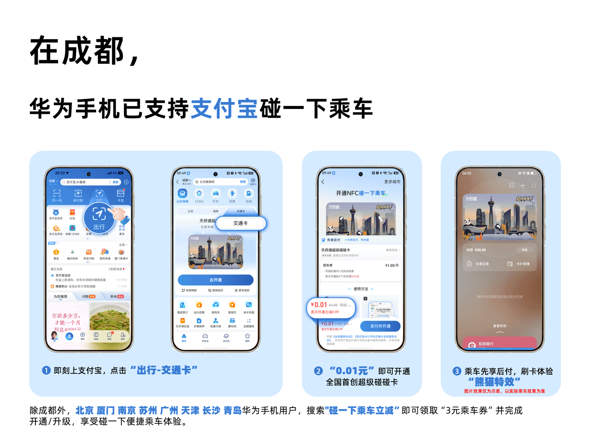

서비스 안내
IT홈의 보도에 따르면, 오늘 오후 Alipay 공식 웨이보를 통해 시안, 다롄, 지난 세 지역의 iPhone 사용자가 Apple Wallet에서 직접 Alipay를 추가하여 교통카드를 개통할 수 있게 되었다고 발표했습니다. 은행 카드를 별도로 연동할 필요 없이 원클릭으로 활성화하여 전국 공공교통을 이용할 수 있습니다.
등록 절차
활성화 단계는 다음과 같습니다:
- Apple Wallet에서 "+"를 클릭하여 교통카드 추가 작업 진행 (iOS 26.1 이상 사용자)
- "교통카드" 선택
- "Alipay" 방식 선택
- "Alipay" 앱이 실행되면 확인 및 카드 추가 완료
- 추가가 완료되면 Apple Wallet에서 해당 도시의 카드를 확인할 수 있습니다.
Huawei 협력 및 지원 도시
또한, 청도 지역의 Huawei 스마트폰 사용자는 Alipay와 천부통(天府通), 그리고 Huawei가 공동 출시한 "슈퍼 펑펑 카드"를 체험할 수 있으며, 후불 결제, 충전 불필요, 카드 태그 시 판다 낙하 효과 등 다양한 혜택을 누릴 수 있습니다.
Huawei 스마트폰 내 Alipay 교통카드는 베이징, 난징, 하문, 톈진, 광저우, 쑤저우, 창사, 칭다오 등 여러 도시에서 편리한 승차를 지원하며, 더 많은 도시가 지속적으로 추가될 예정입니다.
총평
Alipay는 특정 지역 iPhone 사용자를 위해 은행 카드 연동이 필요 없는 간편한 교통카드 기능을 도입했습니다. 또한 청도 지역 Huawei 사용자들을 위한 전용 혜택을 제공하고 있으며, 다양한 도시에서 지원하는 교통 서비스 범위를 지속적으로 확대하고 있습니다.
iPhone 用户在 Apple 钱包中添加交通卡
支付宝宣布，西安、大连、济南三地的 iPhone 用户现可在 Apple 钱包中直接添加支付宝来开通交通卡。该功能无需绑定银行卡，用户可一键开通并畅行全国公共交通。
具体操作步骤如下：
- Apple 钱包点击“+”进行添加交通卡操作（iOS 26.1 以上用户）
- 选择“交通卡”
- 选择“支付宝”方式
- 确认打开“支付宝”并完成添加卡片操作
Huawei 用户在特定城市体验功能
成都的 Huawei 手机用户可体验由支付宝、天府通及 Huawei 联合推出的“超级碰碰卡”，支持先乘后付、免充值等权益。此外，Huawei 手机中的支付宝交通卡已支持以下城市的便捷乘车：
- 北京、南京、厦门、天津、广州、苏州、长沙、青岛
总结
支付宝在特定城市与 Apple 钱包及 Huawei 设备深度合作。iPhone 用户可在指定三城免绑卡开通交通卡，而 Huawei 用户在成都可体验“超级碰碰卡”等特色功能。
サービス提供の概要
ITホームの報道によると、Alipayは公式Weiboを通じて、西安、大連、瀋陽の3都市におけるiPhoneユーザーがApple Walletに直接Alipayを追加し、交通カードを開通できるようになったと発表しました。銀行カードを個別に連携させる必要がなく、ワンクリックで有効化することで全国の公共交通機関を利用することが可能です。
登録手順
有効化の手順は以下の通りです：
- Apple Walletで「+」をクリックして交通カードの追加を進める（iOS 26.1以上のユーザー）
- 「交通カード」を選択
- 「Alipay」方式を選択
- 「Alipay」アプリが起動されたら、確認およびカードの追加を完了
- 追加完了後、Apple Walletで該当都市のカードを確認できます。
Huaweiとの提携および対応都市
また、青島エリアのHuaweiスマートフォンユーザーは、Alipayと「天府通（Tianfutong）」、およびHuaweiと共同リリースした「スーパーポンポンカード」を体験でき、後払い、チャージ不要、カードをかざした際のパンダ落下エフェクトなど、さまざまな特典を利用できます。
Huaweiスマートフォン内のAlipay交通カードは、北京、南京、厦門、天津、広州、蘇州、長沙、青島など多くの都市で便利な乗車をサポートしており、今後さらに多くの都市が追加される予定です。
まとめ
Alipayは特定の地域のiPhoneユーザー向けに、銀行カードの連携を必要としない簡便な交通カード機能を導入しました。また、青島エリアのHuaweiユーザー向けの専用特典を提供するとともに、対応する都市の範囲を継続的に拡大しています。
Service Announcement
According to a report by IT Home, Alipay announced via its official Weibo account that iPhone users in Xi'an, Dalian, and Jinan can now add Alipay directly to Apple Wallet to activate transit cards. Users can activate the card with a single click without needing to link a bank card separately, allowing for convenient use of public transportation.
Registration Process
The activation steps are as follows:
- Tap "+" in Apple Wallet to begin adding a transit card (for users on iOS 26.1 or higher).
- Select "Transit Card."
- Choose the "Alipay" method.
- When the Alipay app opens, confirm and complete the card addition.
- Once completed, the specific city's card will be visible in Apple Wallet.
Huawei Collaboration and Supported Cities
Additionally, Huawei smartphone users in Qingdao can experience "Tianfutong" via Alipay as well as the "Super Panda Card," which was co-released with Huawei. This offers various benefits, including postpaid payment, no top-up required, and a special panda falling effect when tapping the card.
Alipay transit cards on Huawei smartphones support convenient travel in several cities, including Beijing, Nanjing, Xiamen, Tianjin, Guangzhou, Suzhou, Changsha, and Qingdao. More cities are expected to be added continuously.
Summary
Alipay has introduced a simplified transit card feature for iPhone users in specific regions that eliminates the need for separate bank card linking. Furthermore, they are providing exclusive benefits for Huawei users in Qingdao while steadily expanding their supported city network.
iPhone用户在Apple钱包添加交通卡
支付宝宣布，西安、大连、济南三地的iPhone用户现可在Apple钱包中直接通过支付宝开通交通卡。该功能无需绑定银行卡，支持一键开通并畅行全国公共交通。
操作步骤
- 在Apple钱包点击“+”进行添加交通卡（iOS 26.1 以上用户）
- 选择“交通卡”
- 选择“支付宝”方式
- 确认打开“支付宝”并完成添加卡片操作
Huawei手机相关权益
在成都的Huawei手机用户可体验由支付宝、天府通及Huawei共同推出的“超级碰碰卡”，该卡提供先乘后付、免充值、刷卡熊猫掉落特效等多项权益。
此外，Huawei手机中的支付宝交通卡已支持以下城市：
- 北京
- 南京
- 厦门
- 天津
- 广州
- 苏州
- 长沙
- 青岛
总结
支付宝与Apple钱包及Huawei设备深度合作，简化了交通卡开通流程。iPhone用户在特定城市可免绑卡一键入场，而Huawei用户在成都等城市可享受更多特有的“超级碰碰卡”权益。
iPhoneユーザー向けサービス提供
ITホームの報道によると、Alipayは公式Weiboを通じて、西安、大連、済南の3都市におけるiPhoneユーザーがApple Walletに直接Alipayを追加し、交通カードを開通できるようになったと発表しました。銀行カードを個別に連携させる必要がなく、ワンクリックで有効化することで全国の公共交通機関を利用することが可能です。
登録手順
有効化の手順は以下の通りです：
- Apple Walletで「+」をクリックして交通カードの追加を進める（iOS 26.1以上のユーザー）
- 「交通カード」を選択
- 「Alipay」方式を選択
- 「Alipay」アプリが起動されたら、確認およびカードの追加を完了
Huaweiとの提携および対応都市
また、成都のHuaweiスマートフォンユーザーは、Alipay、天府通（Tianfutong）、およびHuaweiが共同で提供する「スーパーポンポンカード」を利用でき、後払いやチャージ不要などの特典を受けることができます。
Huaweiスマートフォン内のAlipay交通カードは、以下の都市で便利な乗車をサポートしており、今後さらに多くの都市が追加される予定です：
- 北京、南京、厦門、天津、広州、蘇州、長沙、青島
まとめ
Alipayは特定の地域におけるiPhoneユーザー向けに、銀行カードの連携を必要としない簡便な交通カード機能を提供します。また、成都のHuaweiユーザーには特別な特典が付与されるほか、多くの都市でサポートされる交通サービス範囲を順次拡大しています。
Service Announcement
According to reports from IT Home, Alipay announced via its official Weibo that iPhone users in Xi'an, Dalian, and Jinan can now add Alipay directly to Apple Wallet to activate transit cards. This feature allows for one-click activation to use national public transportation without the need to link a bank card separately.
Registration Process
The activation steps are as follows:
- Click "+" in Apple Wallet to begin adding a transit card (for users on iOS 26.1 or higher)
- Select "Transit Card"
- Select the "Alipay" method
- When the Alipay app opens, confirm and complete the card addition
- Once completed, the card for the corresponding city will be available in Apple Wallet
Huawei Collaboration and Supported Cities
Additionally, Huawei smartphone users in Chengdu can experience the "Super Pong Pong Card," co-launched by Alipay, Tianfutong, and Huawei. This card offers various benefits, including post-payment, no top-up required, and a special panda falling effect when tapping the card.
Alipay transit cards on Huawei smartphones support convenient travel in several cities, including:
- Beijing, Nanjing, Xiamen, Tianjin, Guangzhou, Suzhou, Changsha, and Qingdao
More cities are expected to be added continuously.
Summary
Alipay has introduced a streamlined transit card feature for iPhone users in specific Chinese cities, allowing one-click activation without the need for separate bank card linking. Furthermore, the platform offers exclusive features like the "Super Pong Pong Card" for Huawei users in Chengdu and continues to expand its supported city network across various devices.

